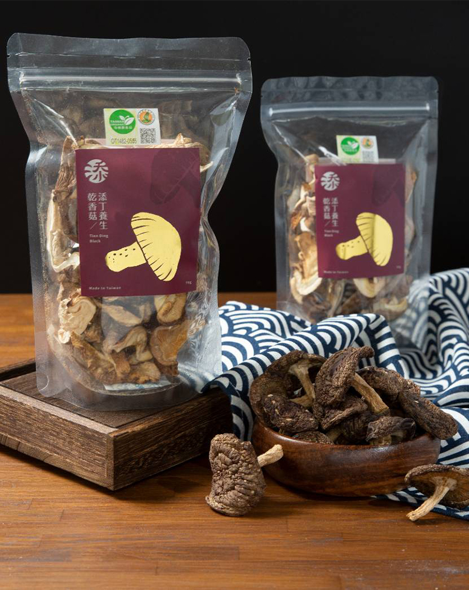
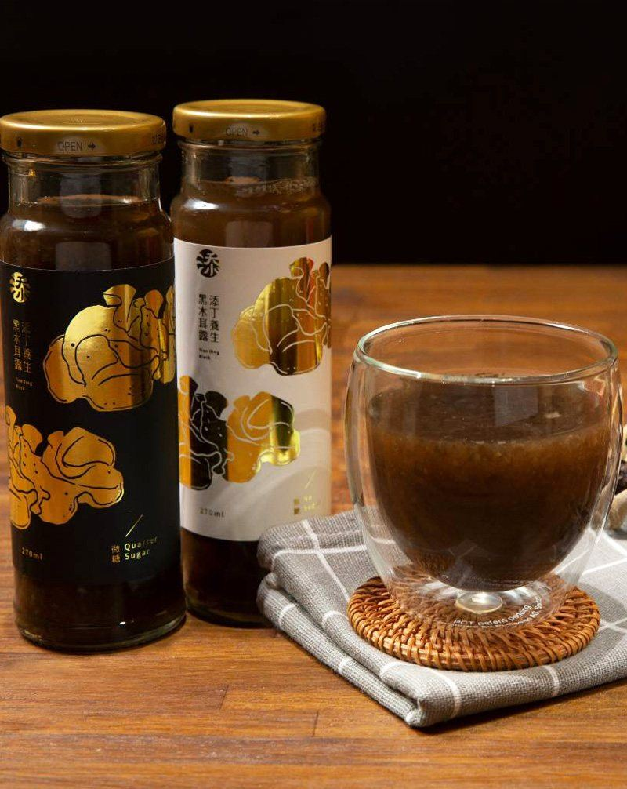
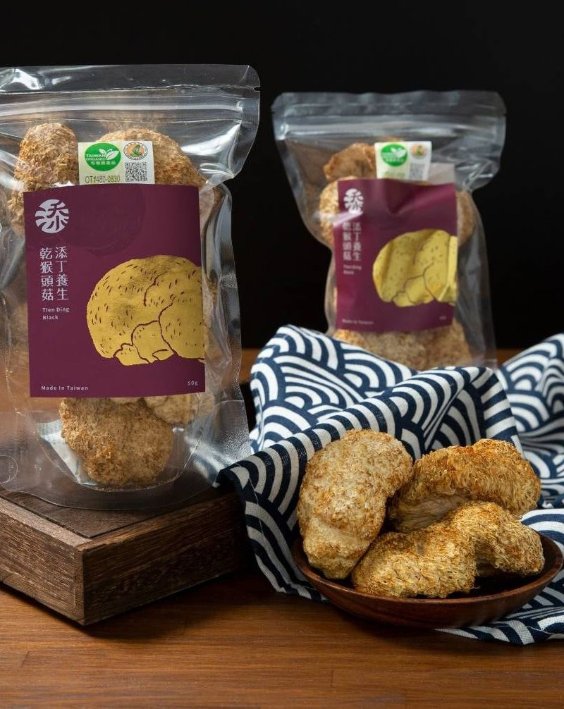
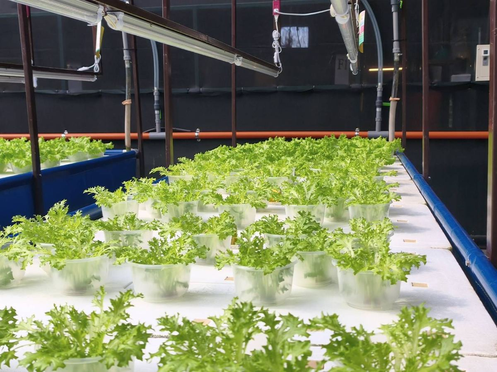
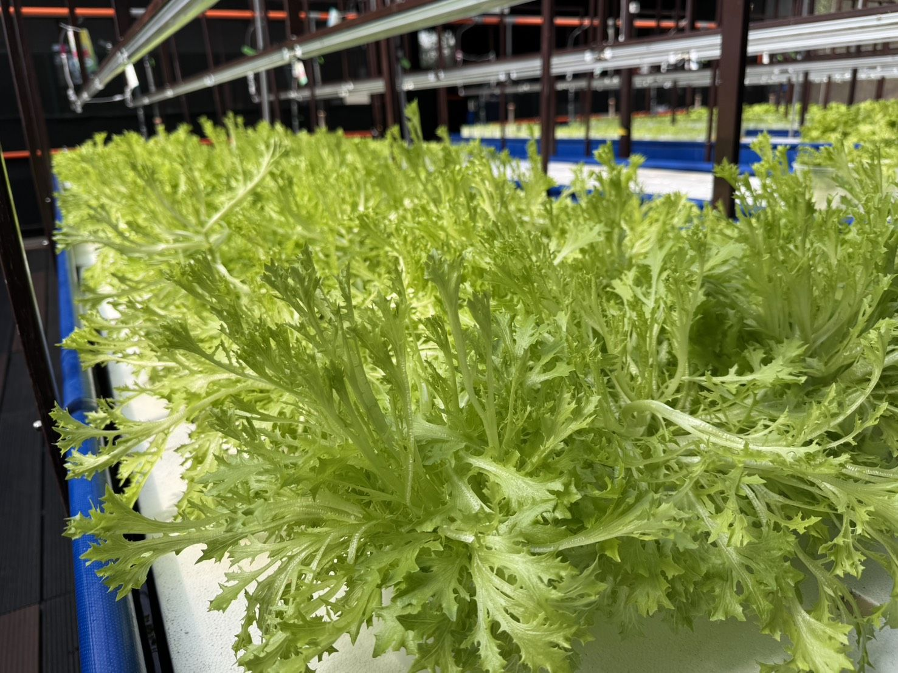

桃園大溪添丁養生黑木耳桃園大溪的有機菇農場，採自然栽培，不用化學農藥和合成肥料，品項都通過有機認證。也是農業部選出的第四屆百大青農。 種什麼香菇、黑木耳、猴頭菇、白雪菇、紫雲菇 有機乾燥香菇特濃黑木耳露有機乾燥猴頭菇 買這家農場的商品
 新北三芝森川鹿場森川鹿場在場內的溫室用魚菜共生種萵苣。魚池的水流過植物床，養出一床床皺葉萵苣、橡木萵苣和苦苣。 種什麼綠皺葉萵苣、紅綠橡木萵苣、捲葉苦苣 綠皺葉萵苣紅綠橡木萵苣捲葉苦苣 買這家農場的商品